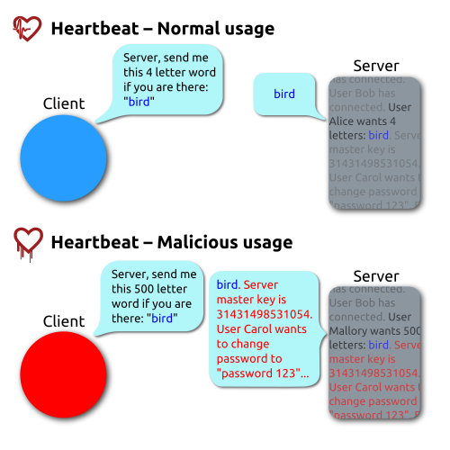

OWASP Albuquerque
It motivated the approach for software testing:
A program is detected as faulty only if it crashes or hangs (loops indefinitely).
The most common bugs found are related to assumptions on how the data will be presented and not enforcing additional checks for the latter. These were the following and/or associated to the following:
git clone https://gitlab.com/akihe/radamsa.git
cd radamsa
make
sudo make install
echo "Hello, world!" | radamsa
radamsa with jqjq . test.json # Test if a json file is valid
radamsa test.json | jq
while true; do
radamsa test.json > input.txt
jq . input.txt > /dev/null 2>&1
if [ $? -gt 127 ]; then
cp input.txt crash-`date +s%.%N`.txt
echo "Crash found!"
fi
done
libFuzzer comes installed with clang
brew install llvmA function that accepts an array of bytes and does something interesting with these bytes using the API under test.
// fuzz_target.cc
extern "C" int LLVMFuzzerTestOneInput(const uint8_t *Data, size_t Size) {
DoSomethingInterestingWithMyAPI(Data, Size);
return 0; // Values other than 0 and -1 are reserved for future use.
}
Build program with fuzzing options:
clang -g -O1 -fsanitize=fuzzer mytarget.c # Builds the fuzz target w/o sanitizers
clang -g -O1 -fsanitize=fuzzer,address mytarget.c # Builds the fuzz target with ASAN
clang -g -O1 -fsanitize=fuzzer,signed-integer-overflow mytarget.c # Builds the fuzz target with a part of UBSAN
clang -g -O1 -fsanitize=fuzzer,memory mytarget.c # Builds the fuzz target with MSAN
Test cases as seeds
/opt/homebrew/opt/llvm/bin/clang++ -g -fsanitize=address,fuzzer tutorial/libFuzzer/fuzz_me.cc -o fuzz_test
./fuzz_test

Figure 1: Heartbleed explanation
openssl-1.0.1f-fsanitize_fuzzermkdir -p heartbleed; rm -rf heartbleed/*; cd heartbleed
<fuzzer-test-suite>/openssl-1.0.1f/build.sh
./openssl-1.0.1f-fsanitize_fuzzer